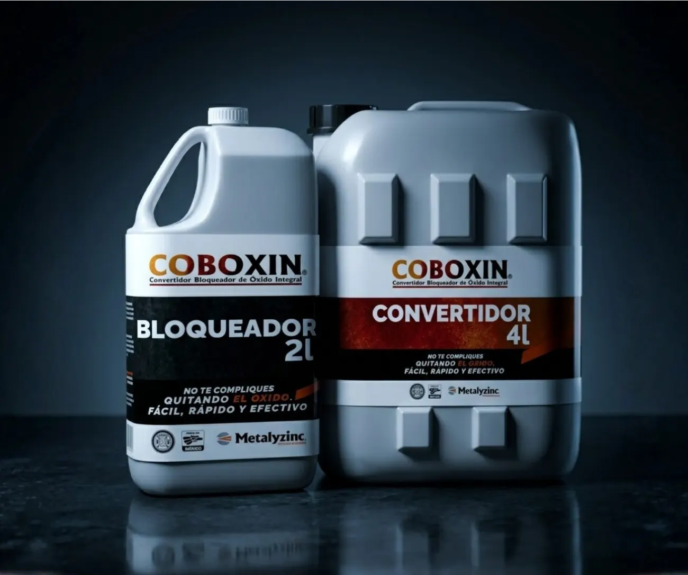
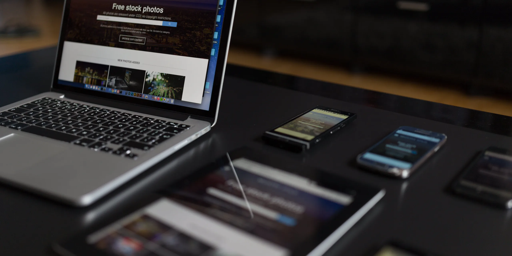

Una ruta estratégica paraconstruir, lanzar y hacer crecer tu marca
A través de nuestro Método Boreal guiamos a cada marca desde la claridad estratégica hasta la ejecución, integrando las herramientas necesarias en cada etapa del proyecto.

Claridad
Diagnóstico, objetivos, cliente ideal, propuesta de valor y diferenciador.
Arquitectura
de marca
Mensaje, narrativa, identidad/experiencia, oferta y assets clave.
Lanzamiento
Plan por etapas, contenidos educativos, producción de piezas y ejecución.
Escalamiento
Optimización, medición, ajustes, campañas y crecimiento sostenido.
Un equipo estratégico integral
para cada etapa de tu marca
Nuestros
Servicios

Consultoría claridad estratégica
de marca y posicionamiento
Sesión Norte
¿Qué obtienes?
- Diagnóstico de marca, oferta y canales.
- Priorización de oportunidades.
- Ruta estratégica para los próximos 30 días.
- Recomendación del siguiente paso.
Ideal para:
Empresas que sienten que su comunicación está dispersa o no tienen claridad sobre cómo avanzar.
Entregable: Hoja de ruta + resumen ejecutivoBlueprint Boreal
Una consultoría estratégica intensiva para empresas que necesitan diferenciarse, ordenar su comunicación y construir una base sólida antes de invertir en diseño, campañas o desarrollo.
¿Qué desarrollamos?
- Auditoría de marca.
- Buyer Persona.
- Propuesta de valor.
- Arquitectura de oferta.
- Mensajes clave.
- Roadmap estratégico de 60–90 días.
Ideal para:
Marcas que buscan claridad estratégica y una hoja de ruta antes de ejecutar.
Aplica para una sesión Norte →2 a 3 semanas


Lanzamiento integral
de marca y producto

Acompañamiento de 8 a 12 semanas*
Nuestro servicio premium para empresas que buscan lanzar o relanzar una marca, producto o servicio mediante una estrategia integral y una ejecución coordinada.
Ideal para:
Empresas que quieren llegar al mercado con una propuesta sólida, diferenciada y respaldada por una estrategia profesional.
*Se requiere forzosamente pasar por la sesión Norte.
- Claridad estratégica
- Arquitectura de marca
- Preparación de canales
- Producción de contenido
- Dirección creativa
- Activación digital
- Acompañamiento durante el lanzamiento

Mentorías personalizadas
1:1 y grupales
Acompañamiento estratégico para dueños y equipos que quieren lanzar un producto o servicio con orden y enfoque, sin improvisar.
Ideal si tienes un negocio en marcha y necesitas dirección senior para llevar tu lanzamiento al siguiente nivel.
Mentorías 1:1
Para quién:
Equipo con capacidad de ejecutar, pero que necesita dirección senior y control de calidad.
Formato:
4 a 8 sesiones (semanales o quincenales).
Incluye:
Revisión de avances, feedback sobre piezas, ajustes estratégicos, checklist por etapa.
Me interesa Mentoría 1:1 →Mentoría grupal
Para quién:
Emprendedores/empresas pequeñas que quieren método y acompañamiento, sin contratar un servicio integral.
Formato:
4 a 6 semanas.
Incluye:
Sesiones en vivo + plantillas + revisión de entregables clave.
Me interesa Mentoría grupal →De la estrategia
a la acción
Convertimos la estrategia en acciones concretas, integrando las soluciones digitales que cada proyecto necesita para avanzar, posicionarse y crecer.

Diseño web profesional
Experiencias digitales diseñadas para comunicar, posicionar y convertir.
Gestión de campañas digitales
Meta Ads, TikTok Ads, Google Ads, Amazon Ads y Mercado Libre Ads para generar demanda y oportunidades de negocio.
Dirección estratégica de redes sociales
Meta, TikTok y YouTube como canales estratégicos para comunicar, educar y fortalecer el posicionamiento de marca.

Más que una
agencia boutique
Nos integramos a tu proyecto como
tu equipo estratégico interno.
Pensamos, diseñamos y ejecutamos
con una visión clara: crecimiento sostenible
y posicionamiento sólido.

FAQ’s
La Sesión Norte se realiza de manera virtual. En casos específicos, podemos evaluar la posibilidad de realizarla presencialmente, sujeto a disponibilidad.
Recibes confirmación inmediata y podrás elegir el día y horario de tu sesión directamente en nuestro calendario.
Sí. La sesión está pensada justamente para ordenar ideas, detectar prioridades y darte claridad sobre el siguiente paso.
Escríbenos para conocer las condiciones vigentes al contratar un proyecto con Boreal después de tu sesión.
Sí. Para proyectos y cotizaciones iniciamos con la Sesión Norte: es la forma más rápida y efectiva de definir prioridades y tomar decisiones con claridad.